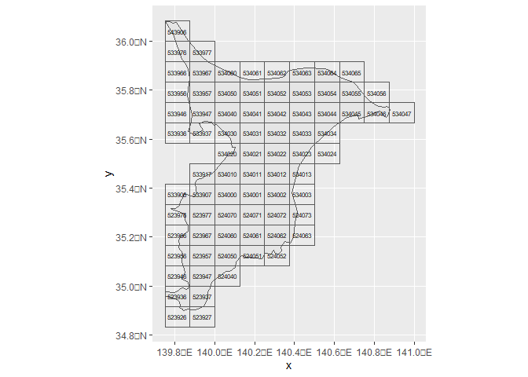
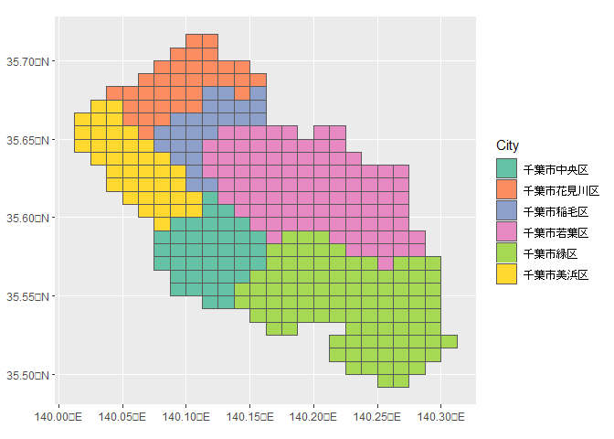
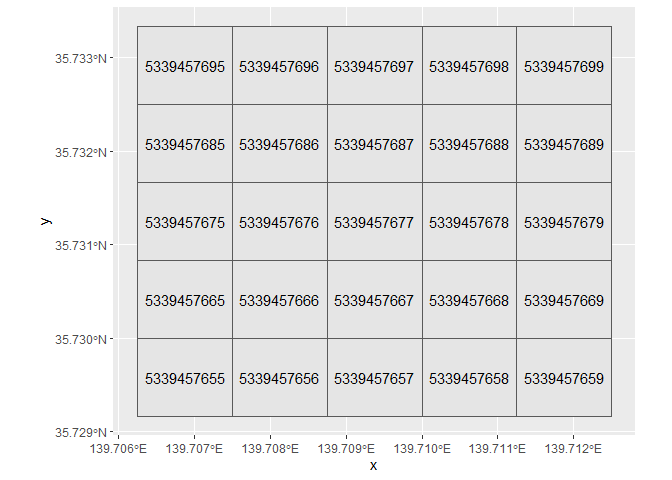
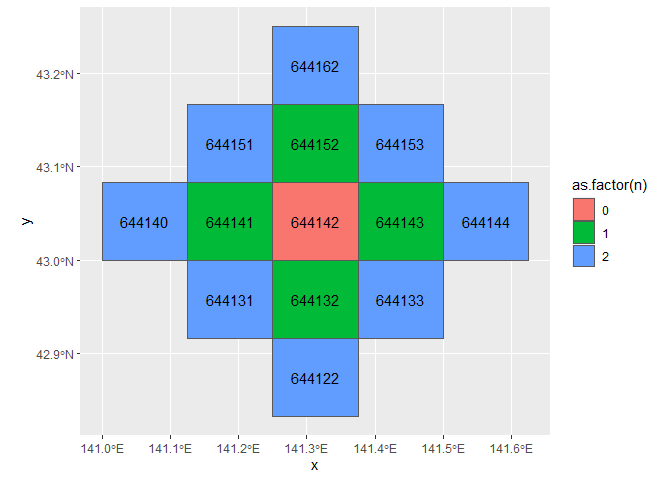
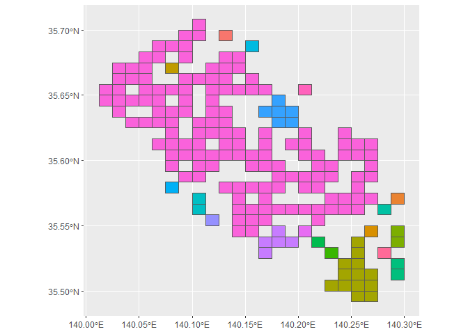
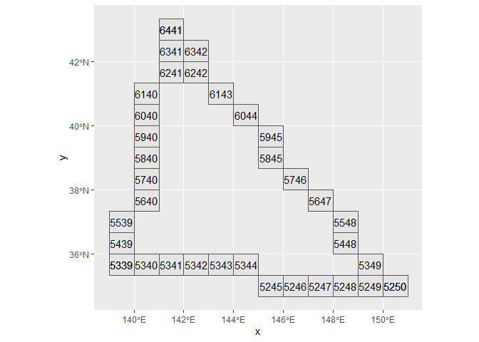

jpgrid is an R package for using the JIS (Japan Industrial Standard) X 0410 ‘Grid Square Code’. grid square codes are square-like regional divisions set up for all regions of Japan based on longitude and latitude. For more information, please check the Statistics Bureau of Japan page.
A summary of the grid square codes is shown below. In jpgrid, each code is distinguished by the length of a piece of grid, such as grid_80km.
| Name | Edge length | Number of digits |
|---|---|---|
| 1st grid | Abount 80km | 4 |
| 2nd grid | Abount 10km | 6 |
| 3rd grid | Abount 1km | 8 |
| 1/2 grid | Abount 500m | 9 |
| 1/4 grid | Abount 250m | 10 |
| 1/8 grid | Abount 125m | 11 |
| 1/10 subdivision of the 3rd grid | Abount 100m | 10 |
jpgrid has been developed to enable faster processing than the R package jpmesh. The main differences between jpgrid and jpmesh are as follows
- Explicitly given a grid size (such as
grid_80km). - Non-land (ocean) grids are supported.
- It can extract nth-order neighboring grids and perform complex operations such as extracting grids and calculating the distance of (line) paths between grids.
Installation
You can install jpgrid from CRAN.
install.packages("jpgrid")You can also install the development version from GitHub.
# install.packages("devtools")
devtools::install_github("UchidaMizuki/jpgrid")Usage
Conversion of geometry to grid square codes
geometry_to_grid() can be used to convert sf objects to the grid square codes. You can also use grid_as_sf() to convert data containing grid square codes (of class grid) into an sf object.
geom_chiba <- rnaturalearth::ne_states(country = "japan",
returnclass = "sf") |>
filter(name == "Chiba")
grid_chiba <- geometry_to_grid(geom_chiba, "10km") |>
first() |>
grid_as_sf(crs = sf::st_crs(geom_chiba))
grid_chiba |>
ggplot() +
geom_sf(data = geom_chiba) +
geom_sf(fill = "transparent") +
geom_sf_text(aes(label = as.character(grid)),
size = 2)
grid_city_2020 contains 1 km grid square codes for each municipality in Japan.
grid_city_2020 |>
filter(str_starts(city_code, "121")) |>
grid_as_sf(crs = JGD2011) |>
ggplot(aes(fill = as_factor(city_name_ja))) +
geom_sf() +
scale_fill_brewer("City",
palette = "Set2")
Generation of grid square codes from character strings or numbers
Use parse_grid() to generate grid square codes from strings or numbers.
- Specify the grid size as
grid_size = "80km".- If
grid_size = NULL, the grid size is automatically determined.
- If
- The default (
strict = TRUE) requires the grid square codes to have a given number of digits.
x <- c("53394526313", "5339358633", "533945764", "53394611", "523503", "5339", NA)
parse_grid(x, grid_size = "80km")
#> <grid_80km[7]>
#> [1] <NA> <NA> <NA> <NA> <NA> 5339 <NA>
parse_grid(x, grid_size = "125m")
#> <grid_125m[7]>
#> [1] 53394526313 <NA> <NA> <NA> <NA> <NA>
#> [7] <NA>
parse_grid(x)
#> Guessing, grid_size = "80km"
#> <grid_80km[7]>
#> [1] <NA> <NA> <NA> <NA> <NA> 5339 <NA>
parse_grid(x, "80km",
strict = FALSE)
#> <grid_80km[7]>
#> [1] 5339 5339 5339 5339 5235 5339 <NA>
parse_grid(x, "125m",
strict = FALSE)
#> <grid_125m[7]>
#> [1] 53394526313 <NA> <NA> <NA> <NA> <NA>
#> [7] <NA>
parse_grid(x,
strict = FALSE)
#> Guessing, grid_size = "80km"
#> <grid_80km[7]>
#> [1] 5339 5339 5339 5339 5235 5339 <NA>Converting the grid size of grid square codes
Use grid_convert() to coarsen the grid size of grid square codes. The grid_subdivide() function can be used to subdivide grid square codes.
-
grid_subdivide()outputs a list of grid square codes whose elements are contained in the original grids. - The conversion between 500m grid and 100m grid is supported.
grid_500m <- parse_grid("533945764", "500m")
grid_convert(grid_500m, "1km")
#> <grid_1km[1]>
#> [1] 53394576
grid_100m <- grid_subdivide(grid_500m, "100m")
grid_100m
#> [[1]]
#> <grid_100m[25]>
#> [1] 5339457655 5339457665 5339457675 5339457685 5339457695 5339457656
#> [7] 5339457666 5339457676 5339457686 5339457696 5339457657 5339457667
#> [13] 5339457677 5339457687 5339457697 5339457658 5339457668 5339457678
#> [19] 5339457688 5339457698 5339457659 5339457669 5339457679 5339457689
#> [25] 5339457699
tibble(grid_100m = grid_100m[[1]]) |>
grid_as_sf(crs = JGD2011) |>
ggplot() +
geom_sf() +
geom_sf_text(aes(label = as.character(grid_100m)))
Conversion from longitude/latitude to grid square codes
The coords_to_grid() converts longitude and latitude to grid square codes.
tibble(X = c(139.7008, 135.4375), # longitude
Y = c(35.68906, 34.70833)) |> # latitude
mutate(grid_100m = coords_to_grid(X, Y, "100m"),
grid_125m = coords_to_grid(X, Y, "125m")) |>
knitr::kable()| X | Y | grid_100m | grid_125m |
|---|---|---|---|
| 139.7008 | 35.68906 | 5339452660 | 53394526313 |
| 135.4375 | 34.70833 | 5235034499 | 52350344444 |
Conversion from grid square codes to longitude/latitude
The grid_to_coords() function converts grid square codes to longitude and latitude.
tibble(grid = parse_grid(c("5339452660", "5235034590"), "100m")) |>
mutate(grid_to_coords(grid)) |>
knitr::kable()| grid | X | Y |
|---|---|---|
| 5339452660 | 139.7006 | 35.68875 |
| 5235034590 | 135.4381 | 34.70792 |
Calculation of adjacent grid square codes
The grid_neighborhood() function calculates the neighboring grids.
- nth order neighboring grids can be calculated by specifying
n. - You can specify a Neumann neighborhood with
type = "von_neumann"and a Moore neighborhood withtype = "moore".
neighborhood <- parse_grid("644142", "10km") |>
grid_neighborhood(n = c(0:2),
type = "von_neumann",
simplify = FALSE)
neighborhood[[1]] |>
grid_as_sf(crs = JGD2011) |>
ggplot(aes(fill = as.factor(n))) +
geom_sf() +
geom_sf_text(aes(label = as.character(grid_neighborhood)))
neighborhood <- parse_grid("644142", "10km") |>
grid_neighborhood(n = c(0:2),
type = "moore",
simplify = FALSE)
neighborhood[[1]] |>
grid_as_sf(crs = JGD2011) |>
ggplot(aes(fill = as.factor(n))) +
geom_sf() +
geom_sf_text(aes(label = as.character(grid_neighborhood)))
Get the connected components of grid square codes
grid_components() calculates the connected components of grid square codes and returns the cluster ID.
- You can specify
nandtypeas in thegrid_neighborhood().
set.seed(1234)
grid_city_2020 |>
filter(str_starts(city_code, "121")) |>
slice_sample(prop = 0.5) |>
mutate(cluster = grid_components(grid,
type = "von_neumann")) |>
grid_as_sf(crs = JGD2011) |>
ggplot(aes(fill = fct_shuffle(as_factor(cluster)))) +
geom_sf(show.legend = FALSE) 
Draw line segments between grids
The grid_line() function extracts grids that lie on the line segments between grids.
grid_from <- parse_grid(c("6441", "5339"), "80km")
grid_to <- parse_grid(c("5237", "5235"), "80km")
line <- grid_line(grid_from, grid_to)
tibble::tibble(grid = line[[1]]) |>
grid_as_sf(crs = JGD2011) |>
ggplot() +
geom_sf() +
geom_sf_text(aes(label = as.character(grid)))
It can handle the case of passing through multiple grids by giving a list of grids.
- Close the line segment with
close = TRUE. -
skip_na = TRUEto skipNA.
grid_1 <- parse_grid(c("6441", "5339", NA, "5250"), "80km")
grid_2 <- parse_grid(c("6439", "5211", "4013", "6635"), "80km")
line <- grid_line(list(grid_1, grid_2),
close = TRUE,
skip_na = TRUE)
tibble::tibble(grid = line[[1]]) |>
grid_as_sf(crs = JGD2011) |>
ggplot() +
geom_sf() +
geom_sf_text(aes(label = as.character(grid)))
Calculation of distance between grids
The grid_distance() function calculates the distance between grids (great circle distance).
- As with
grid_line(), the path distance can be calculated bylistof grids.
grid_from <- parse_grid(c("6441", "5339"), "80km")
grid_to <- parse_grid(c("5237", "5235"), "80km")
distance <- grid_distance(grid_from, grid_to)
print(distance)
#> Units: [m]
#> [1] 954045.5 370318.1Others
-
grid_move()function can be used to calculate the grid square code in the east-west and north-south directions. - For grid outside the range of the 80 km grid, where the digits are negative or exceed three digits, the relevant code is displayed as
<-1>or<123>to clearly distinguish them from existing grids.